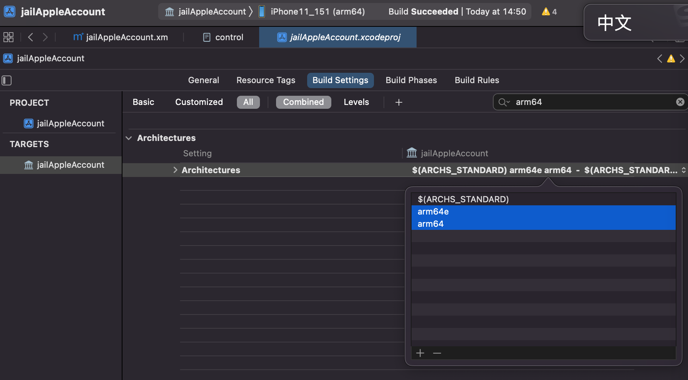

iPhone机型信息
越狱之前，需要搞清楚，常见的iPhone设备的信息，尤其是arm的架构，尤其是最新的A12+芯片所支持的ARMv8.3的arm64e。
因为后续比如palera1n等越狱时，会涉及到。要先搞清楚：
- ARM Architecture:
arm64e- iPhone 13 / iPhone 13 Pro
- SoC:
A15
- SoC:
- iPhone 12 / iPhone 12 Pro
- SoC:
A14
- SoC:
- iPhone 11 / iPhone 11 Pro / iPhone SE (2nd generation)
- SoC:
A13
- SoC:
- iPhone XS / iPhone XR
- SoC:
A12
- SoC:
- iPhone 13 / iPhone 13 Pro
- ARM Architecture:
arm64- iPhone X / iPhone 8
- SoC:
A11
- SoC:
- iPhone 7
- SoC:
A10
- SoC:
- iPhone 6s / iPhone SE (1st generation)
- SoC:
A9
- SoC:
- iPhone 6
- SoC:
A8
- SoC:
- iPhone 5s
- SoC:
A7
- SoC:
- iPhone X / iPhone 8
- ARM Architecture:
armv7s- iPhone 5c / iPhone 5
- SoC:
A6
- SoC:
- iPhone 5c / iPhone 5
- ARM Architecture:
armv7- iPhone 4S
- SoC:
A5
- SoC:
- iPhone 4
- SoC:
A4
- SoC:
- iPhone 4S
- ARM Architecture:
armv6- iPhone 3GS
- SoC:
APL0298
- SoC:
- iPhone 2G
- SoC:
APL0098
- SoC:
- iPhone 3GS
搞懂iPhone机型信息有何用？
这样才能在iOS逆向期间，对于涉及到ARM架构的时候，有所了解底层的含义：
比如：
iOS 13的AppleIDAuthSupport库所支持的iPhone机型
不同机型所对应的ARM的架构是：
- armv6
- armv7
- armv7s
- arm64
- arm64e
而iOS的很多的Framework库，本身支持足够多的iOS的机型，所以会看到：
iOS的Framework库的tbd信息中，包括了支持的多个的ARM的arch架构
比如：
- iOS 13的AppleIDAuthSupport.tbd
- iPhoneOS13.0.sdk/System/Library/PrivateFrameworks/AppleIDAuthSupport.framework/AppleIDAuthSupport.tbd
.... archs: [ armv7, armv7s, arm64, arm64e ] platform: ios ... install-name: /System/Library/PrivateFrameworks/AppleIDAuthSupport.framework/AppleIDAuthSupport- iOS 13.0的AppleIDAuthSupport.framework库，支持多个ARM的arch架构：armv7, armv7s, arm64, arm64e
- 意思就是，这个库，支持如下机型的iPhone
- armv7 的
iPhone 4/4S - armv7s 的
iPhone 5/5c - arm64 的
iPhone 5s/6/6s/SE(1st generation)/7/8/X - arm64e 的
iPhone XS / XR / 11/11 Pro/SE (2nd generation)/12/12 Pro/13/ 13 Pro
- armv7 的
- 意思就是，这个库，支持如下机型的iPhone
- iOS 13.0的AppleIDAuthSupport.framework库，支持多个ARM的arch架构：armv7, armv7s, arm64, arm64e
- iPhoneOS13.0.sdk/System/Library/PrivateFrameworks/AppleIDAuthSupport.framework/AppleIDAuthSupport.tbd
arm64和arm64e的区别
才能搞懂，arm64和arm64e的区别：
XinaA15中的libsubstrate.dylib的不同版本
XinaA15越狱后的A12的iPhone11- 有2个
libsubstrate.dylib/private/preboot/3B92D6F7C3FE6444A715B312E418498574E442DAB2F6D9E18B58B762F71D1455B7E2E1C2DD3912B1B4E6D10C6B9150C8/procursus/xina/libsubstrate.dylib- 大小：
51KB - 只支持一种架构：
arm64e
- 大小：
/private/preboot/3B92D6F7C3FE6444A715B312E418498574E442DAB2F6D9E18B58B762F71D1455B7E2E1C2DD3912B1B4E6D10C6B9150C8/procursus/usr/lib/libsubstrate.dylib- 大小：
218KB - 支持2种架构：
arm64和arm64e
- 大小：
- 有2个
Xcode编译插件时如何支持A12芯片的iPhone11
才能明白，Xcode编译插件，去调试时：
- 报错
默认 14:50:37.206463+0800 Preferences 正在修复 path=/private/preboot/3B92D6F7C3FE6444A715B312E418498574E442DAB2F6D9E18B58B762F71D1455B7E2E1C2DD3912B1B4E6D10C6B9150C8/procursus/Library/MobileSubstrate/DynamicLibraries/jailAppleAccount.dylib
默认 14:50:37.206568+0800 jailbreakd /private/preboot/3B92D6F7C3FE6444A715B312E418498574E442DAB2F6D9E18B58B762F71D1455B7E2E1C2DD3912B1B4E6D10C6B9150C8/procursus/Library/MobileSubstrate/DynamicLibraries/jailAppleAccount.dylib
默认 14:50:37.207165+0800 Preferences tweakinject 注入失败原因:dlopen(/var/Liy/Library/MobileSubstrate/DynamicLibraries/jailAppleAccount.dylib, 0x0009): tried: '/var/Liy/Library/MobileSubstrate/DynamicLibraries/jailAppleAccount.dylib' (mach-o file, but is an incompatible architecture (have 'arm64', need 'arm64e')), '/usr/local/lib/jailAppleAccount.dylib' (no such file), '/usr/lib/jailAppleAccount.dylib' (no such file), '/private/preboot/3B92D6F7C3FE6444A715B312E418498574E442DAB2F6D9E18B58B762F71D1455B7E2E1C2DD3912B1B4E6D10C6B9150C8/procursus/Library/MobileSubstrate/DynamicLibraries/jailAppleAccount.dylib' (mach-o file, but is an incompatible architecture (have 'arm64', need 'arm64e')), '/usr/local/lib/jailAppleAccount.dylib' (no such file), '/usr/lib/jailAppleAccount.dylib' (no such file), '/private/preboot/3B92D6F7C3FE6444A715B312E418498574E442DAB2F6D9E18B58B762F71D1455B7E2E1C2DD3912B1B4E6D10C6B9150C8/procursus/Library/MobileSubstrate/DynamicLibraries/jailAppleAccount.dylib' (mach-o file, but is an incompatible architecture (have <…>
- 原因
是当前Xcode中的ARM的架构
Xcode->TARGETS->YourProjectName->Build Settings->Architectures->Architectures- 默认值是：
arm64,armv7- 所以才：不支持
arm64e的A12芯片的iPhone11
- 所以才：不支持
- 默认值是：
解决办法
而想要让其支持arm64e的A12芯片的iPhone11，则去改为：arm64 arm64e，即可
